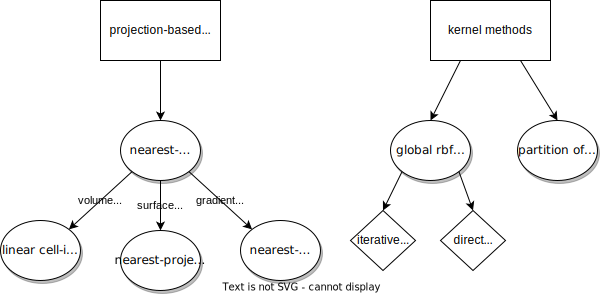
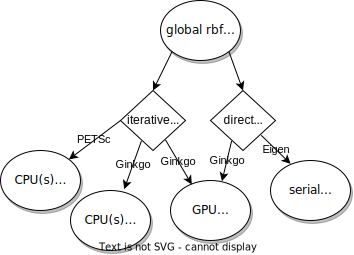

Basics
Each data mapping definition refers to two meshes in the participant configuration: a provide mesh defined by the participant and a receive mesh defined by another participant (e.g. MySolver2):
<participant name="MySolver1">
<provide-mesh name="MyMesh1"/>
<receive-mesh name="MyMesh2" from="MySolver2"/>
<write-data name="Forces" mesh="MyMesh1"/>
<read-data name="Temperature" mesh="MyMesh1"/>
<mapping:nearest-neighbor direction="read" from="MyMesh2" to="MyMesh1" constraint="consistent"/>
<mapping:nearest-neighbor direction="write" from="MyMesh1" to="MyMesh2" constraint="conservative"/>
</participant>
The provide mesh and receive mesh are then assigned to the from and to slot in the mapping configuration to indicate the mesh, on which data is written, and the mesh, on which data is read. In addition to a from and to mesh, each mapping defines a direction, which can either be read or write:
readmappings are executed before you can read data from the mesh. In the example above,Temperatureis received onMyMesh2, then it is mapped fromMyMesh2toMyMesh1and, finally, read fromMyMesh1.writemappings are executed after you have written data.
The direction indicates, how the defined meshes are used from the participant perspective: for a read mapping, the participant reads data from the provide mesh (MyMesh1), for a write mapping, the participant writes data to the provide mesh. In principle, each read mapping can be transformed into a write mapping (see the section restrictions for parallel participants below) by shifting the mapping tag on the ‘other’ involved participant (e.g. MySolver2). Depending on the configuration, data mapping might be computationally demanding. In preCICE the mapping is executed on the participant, where the mapping tag is defined in the configuration file.
advance and not in readData, cf. the section on how to couple your own code.
Each mapping defines a constraint, which defines how the data is mapped between the meshes:
conservativeconstraint:conservativemappings ensure that the global sum of data at the input and output mesh are the same. As an example, one could consider a nearest-neighbor mapping from a fine to a coarse grid: the value at a coarse node is computed as an aggregation of the corresponding fine nodes, such that the total coupling value (in our exampleForces) on the coarse and fine mesh is the same. This is required for quantities that are physically conservative (extensive quantities, such as force, mass, etc.). Visually, the conservative nearest-neighbor example would like like the following:
f=2 f=1 f=2 f=1 f=1
------+------+------+------+------+------
\ | / | /
-------------+-------------+-------------
f=(2+1+2) f=(1+1)
consistentconstraint:consistentconstraints interpolate data between the input and output mesh. This constraint typically applies to intensive quantities such asTemperature(as in our example configuration) or pressure. Considering once more an example of a mapping from a fine to a coarse mesh using a nearest-neighbor mapping: the value at the coarse node would be the same as the value at the corresponding nearest fine node. Visually, the corresponding nearest-neighbor example could look like this:
T=2 T=1 T=2 T=1 T=1
------+------+------+------+------+------
| |
-------------+-------------+-------------
T=1 T=1
scaled-consistent-surfaceandscaled-consistent-volumeconstraint:scaled-consistentconstraints are used for intensive quantities (just as theconsistentconstraint) where conservation of integral values (surface or volume) is necessary (e.g. velocities when the mass flow rate needs to be conserved). The mapping executes aconsistentmapping in a first step, and corrects the result by a subsequent scaling step using the integral data sum to ensure the conservation of the integral sum on the input mesh and the output mesh. To use thescaled-consistent-surfaceconstraint, surface connectivity on input and output meshes is required. To use thescaled-consistent-volumeconstraint, volumetric connectivity on input and output meshes is required.
For a sequential participant, any combination of read/write-consistent/conservative is valid. For a participant running in parallel, only read-consistent and write-conservative is possible. More details are given further below.
Available mapping methods in preCICE
The mapping method itself is defined in the xml configuration after the colon mapping:... (e.g. <mapping:nearest-neighbor ...). In general, preCICE offers two broader groups of mapping methods

Projection-based methods
Projection-based data mapping methods are typically cheap to compute as they don’t involve solving expensive linear systems as opposed to the kernel methods. The basic variant, which operates solely on vertex data, is nearest-neighbor mapping. All other variants require additional information from the user, as shown in the overview figure above.

Available methods are:
nearest-neighbor: A first-order method, which is fast, easy to use, but, of course, has numerical deficiencies.nearest-projection: A (depending on how well the geometries match at the coupling interface) second-order method, which first projects onto surface mesh elements (first-order step) and, then, uses linear interpolation within each element (second-order step) as illustrated in the figure above. The method is still relatively fast and numerically clearly superior tonearest-neighbor. The downside is that mesh connectivity information needs to be defined, i.e. in the adapter, the participant needs to tell preCICE about edges in 2D and edges, triangles, or quadrilaterals in 3D. On the mesh connectivity page, we explain how to define connectivity. If no connectivity information is provided,nearest-projectionfalls back to anearest-neighbormapping.linear-cell-interpolation: Instead of mapping to surface-elements as thenearest-projection,linear-cell-interpolationuses volumetric elements, i.e., it is designed for volumetric coupling, where the coupling mesh is a region of space and not a domain boundary. It interpolates on triangles in 2D and on tetrahedra in 3D. Hence, connectivity information for volumetric elements needs to be defined. If none are found, it falls back onnearest-projectionornearest-neighbor(depending on the available connectivity information). The method was developed in the Master’s thesis of Boris Martin, where more detailed information is available.nearest-neighbor-gradient: A second-order method, which uses the same algorithm as nearest-neighbor with an additional linear approximation using gradient data. This method requires additional gradient data information. On the gradient data page, we explain how to add gradient data to the mesh. This method is only applicable with theconsistentconstraint. The method was developed Master’s thesis of Boshra Ariguib, where more detailed information is available.
Kernel methods
Kernel methods are typically more accurate and can deliver higher-order convergence rates, but are computationally more demanding compared to projection-based mapping methods. All kernel methods operate solely on vertex data such that no additional connectivity information is required from the user. Since preCICE version 3, there are two types of kernel methods available:
-
rbf-global-...mapping methods: this method assembles and computes a global (potentially sparse) linear-system on one mesh, which is then evaluated at the other mesh. The global interpolant is formed by a linear combination of radially-symmetric basis-functions centered on each vertex, enriched by a linear polynomial. Forconsistentconstraints, the resulting linear system has the sizeN x N, whereNcorresponds to the number of vertices of thefrommesh. Forconservativeconstraints, the resulting linear system has the sizeN x N, whereNcorresponds to the number of vertices of thetomesh. preCICE offers two solution strategies to solve the linear system:rbf-global-direct, which computes initially a dense matrix decomposition of the linear system and applies the matrix decomposition afterwards in every coupling iteration to solve the mapping problem. All involved linear-algebra data structures are dense, regardless of the basis-function configuration. This method can use different execution backends. By default, the linear-algebra library Eigen is used. Eigen uses a Cholesky decomposition, if the configured basis-function is strictly positive definite, and a QR decomposition, if that’s not the case. This means that using the mapping with one of the basis-functionsvolume-splines,thin-plate-splinesormultiquadricstakes considerable more time to compute, as these basis-functions are not positive definite. While this mapping method can be used while running a participant in parallel via mpi, a gather-scatter approach is used in preCICE, such that the actual system is solved in serial.rbf-global-iterative, which assembles the system matrix initially and solves the resulting system iteratively in each coupling iteration. This method can use different execution backends. However, the CPU version relies on the linear-algebra library PETSc, which is an optional dependency of preCICE. The PETSc implementation is fully mpi-parallel and uses sparse linear algebra to solve the resulting system. As a consequence, we need to take care when configuring the basis-function for the mapping: it should only be used with compactly supported basis-functions and the configured support-radius or shape-parameter should only cover a limited number of vertices in radial direction (e.g. 10 vertices) such that the resulting linear system is sparse. Details about this implementation can be found in Florian’s thesis (pages 37 ff.).
x-dead="true" to ignore the x coordinate.
rbf-pum-direct, which breaks down the mapping problem in smaller clusters, solves these clusters locally and blends them afterwards together to recover a global solution. This mapping version only needs the linear-algebra library Eigen and the used linear solver is a dense solver in each cluster (actually the same as forrbf-global-direct, i.e., it is beneficial to configure strictly positive definite basis-functions). The mapping is specifically designed for large mapping problems and runs fully mpi-parallel. To configure the accuracy of the mapping, the number ofvertices-per-clustercan be increased. The method can only handle sufficiently matching geometries and problems might occur if large gaps exist between the coupling meshes. Further information, including some performance comparisons, can be found in David’s talk at the preCICE workshop 2023. In practical applications, the partition of unity method typically outperforms any of the global rbf variants.
Configuration
Configuring kernel methods is more involved and offers more options. A full reference of all options can be found in the xml reference. On a broader level, the configuration consists of two main options: the applied kernel mapping method and the used basis-function including its support radius or shape parameter. As the decision about the used kernel mapping method can be intricate, we provide an alias called <mapping:rbf ... which decides dynamically for a kernel method according to the setup (e.g. parallel execution, problem size, available dependencies)
An RBF mapping configuration could look as follows
<mapping:rbf direction="read" from="MyMesh2" to="MyMesh1" constraint="consistent">
<basis-function:compact-polynomial-c6 support-radius="1.8">
</mapping:rbf>
The basis-function has to be defined as a subtag in all kernel methods. In this example the basis-function compact-polynomial-c6 is used with a support radius of r=1.8.
The configuration of the basis-function is problem-dependent. In general, preCICE offers basis function with global and local support:
- Basis-functions with global support (such as
thin-plate-splines) are easier to configure as no further parameter needs to be set. However, typically it pays off in terms of accuracy to configure a basis-function according to your problem dimensions and shape. - Basis functions with local support need either the definition of a
support-radius(such as forcompact-polynomial-c2) or ashape-parameter(such as forgaussian). Selecting a larger and larger support radius leads to a more and more flat basis-function and -in theory- to more and more accurate results. However, the resulting linear system becomes more and more ill-conditioned such that the linear solver might fail eventually.
ASTE and our ASTE tutorial enable full insight into the accuracy of the configured mapping method.
Execution backends
Starting from version 3, preCICE offers to execute mapping:rbf-global... on different executor backends using the linear-operator library Ginkgo

To configure the executor, an additional subtag can be used in the mapping configuration:
<mapping:rbf direction="read" from="MyMesh2" to="MyMesh1" constraint="consistent">
<basis-function:compact-polynomial-c6 support-radius="1.8">
<executor:cuda gpu-device-id="0"/>
</mapping:rbf>
More details on the feature can be found in Schneider et al. 2023.
Geometric multiscale mapping
Geometric multiscale mapping enables the coupling of dimensionally heterogeneous coupling participants, e.g., a 1D system code with a 3D CFD code.
<precice-configuration experimental="true"> and do not consider the configuration to be stable yet. For now, since preCICE does not yet support 1D meshes, both input and output meshes are defined as 3D, and a primary axis defines the active component of the 1D data. Are you interested in this feature? Give us your feedback!
We differentiate between axial and radial geometric multiscale mapping:
| Axial 1D-3D consistent-spread mapping | Radial 1D-3D consisntent-spread mapping |
In a 1D-3D mapping, axial mapping maps between one point at the boundary of the 1D domain and multiple points at a surface of a 3D domain, while the domains are connected over a main axis. Radial mapping maps between multiple (internal) points of the 1D domain and multiple points at a surface of a 3D domain. In a 1D-3D domain, the 3D domain can encapsulate the 1D domain, or the 1D domain can be a line on the surface of the 3D domain. Currently, axial and radial geometric multiscale coupling is only supported in a consistent manner between 1D and 3D participants and over a circular interface, but extensions to this are planned.
The concept also extends to 1D-2D, 2D-3D, and further setups, which are not currently supported.
Potential configurations for the axial and radial geometric multiscale mapping look as follows:
<mapping:axial-geometric-multiscale direction="read" type="spread" radius="1.0" axis="X" from="MyMesh2" to="MyMesh1" constraint="consistent" />
<mapping:radial-geometric-multiscale direction="read" type="collect" axis="X" from="MyMesh1" to="MyMesh2" constraint="consistent" />
The type which can be either "spread" or "collect" refers to whether the participant spreads data from one mesh node to multiple nodes or collects data from multiple mesh nodes into one node. The axis is the main axis, along which the coupling takes place, i.e. the principal axis of the 1D and 3D participants. The radius refers to the radius of the circular interface boundary surface.
Since the 1D participant likely computes average quantities, e.g., the average pressure and velocity in a pipe, a velocity profile has to be assumed in order to convert data between the 1D and 3D participant for the axial mapping. Currently, a laminar flow profile is imposed by default, but different profiles might be supported in the future.
Restrictions for parallel participants
As stated above, for parallel participants only read-consistent and write-conservative are valid combinations. If want to find out why, have a look at Benjamin’s thesis, page 85. But what to do if you want a write-consistent mapping? The trick is to move the mapping to the other participant, then write becomes read:
- Move the mapping, adjust
writetoread - Be sure that the other participant also uses both meshes. Probably you need an additional
<receive-mesh name="MyMesh1" from="MySolver1"/>. This means another mesh is communicated at initialization, which can increase initialization time. - Last, be sure to update the
exchangetags in the coupling scheme, compare the coupling scheme configuration (e.g. change which mesh is used for the exchange and acceleration)
Maybe an example helps. You find one in the preCICE Forum.